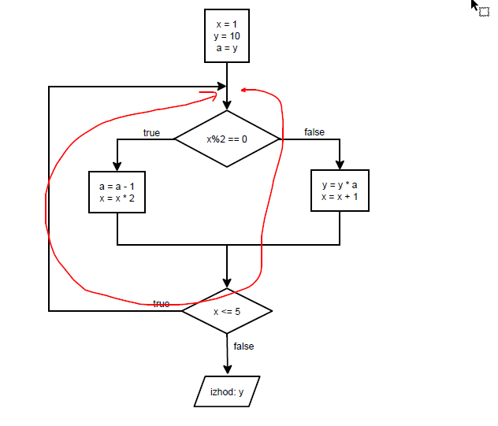
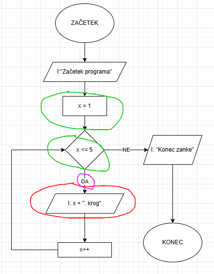
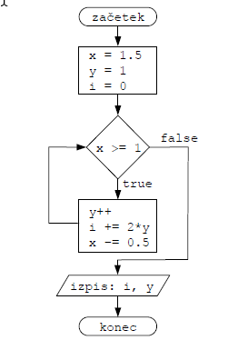
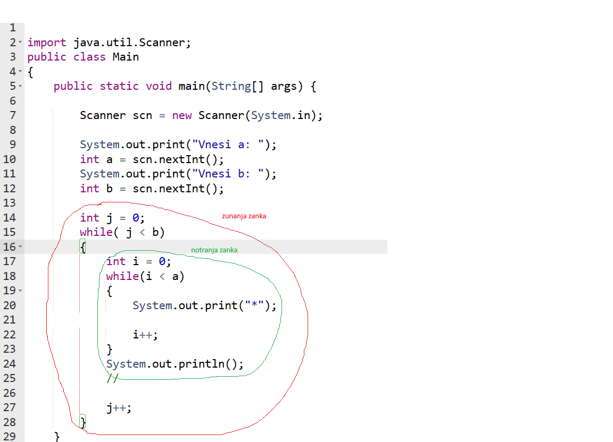

Zanke
Zanka je programska struktura, ki omogoča večkratno izvajanje istega dela kode. Izvajanje zanke je odvisno od pogoja, ki je del zanke. Navadno se koda v zanki izvaja, ko je pogoj resničen (true).
Zanke uporabljamo vedno, ko želimo, da se del programa ponovi večkrat, brez da bi morali isti ukaz pisati znova in znova. Gre za eno najpomembnejših orodij v programiranju.
Ker je število ponovitev neke programske kode pogosto odvisno od zunanjih dejavnikov (uporabnik, naključne, izračun, ...), je nemogoče pisati programe brez uporabe zank.

Slika 1: Zanka. Program se lahko vrne v točko, kjer je že bil.
Vrste zank
Spoznali bomo tri ključne besede v javi, ki omogočajo, da izbrane ukaze izvajamo večkrat zaporedoma. Tem stavkom pravimo zanke. Stavki so:
while
do – while
for
Omenjene zanke so si zelo podobne v tem, da ponavljajo kodo v telesu zanke, dokler je pogoj resničen (true). Ko pogoj postane neresničen, se izvajanje kode nadaljuje po telesu zanke.
Stavka while in for pogoj preverita preden se izvede telo. Tako da je mogoče, da se telo zanke sploh ne izvede.
Staevek do-while pa najprej izvede telo zanke (vsaj enkrat) in šele nato preveri pogoj. Na sliki zgoraj imamo primer zanke, ki bi ga lahko implementirali (zapišemo) z zanko for ali while. Primer spodaj prikazuje zanko, ki jo lahko implementiramo z zanko do—while.

Slika 2: Zanka. Implementiramo jo lahko s stavkom do - while
Zanka while
Sintaksa
 |
primer:
|
|---|---|
stavki pred zanko while(pogoj) telo zanke (stavki v zanki) stavki po zanki |
stavki pred zanko while(pogoj) telo zanke (stavek v zanki) stavki po zanki |
Primer programa, ki je prikazan z diagramom poteka desno zgoraj: |
Primera: ali |
Izpis: Začetek programa! 1. krog 2. krog 3. krog 4. krog 5. krog Konec zanke. |
Izpis: Začetek programa! 1. krog 2. krog 3. krog 4. krog 5. krog Konec zanke. |

Pri vseh treh vrstah zank običajno uporabljamo števec (pomožno spremenljivko), ki nam omogoča, da se ukazi v telesu zanke izvedejo natanko tolikokrat, kot želimo.
Števcu pred začetkom zanke določimo začetno vrednost.
Zanko oblikujemo tako, da se v pogoju sklicujemo na ta isti števec.
V telesu zanke števec spreminjamo (najpogosteje povečujemo ali zmanjšujemo), da pogoj čez čas postane neveljaven (false) – s tem se zanka pravilno zaključi in program nadaljuje izvajanje izven zanke.

Komentar diagrama poteka (zgoraj):
z zeleno barvo je prikazan števec
z rdečo barno je prikazan stavek, ki želimo da se ponavlja
z vijolično barvo je prikazano, da mora biti pogoj izpolnjen (true), da se zanka izvaja
Pogoste napake:
| Neskončna zanka. Pogoj se nikoli ne spremeni | while (i <= 5) |
|---|---|
| Pogoj se nikoli ne izpolni. Telo se nikoli ne izvede. | while (i < 5) ... |
| Pogoj se napačno spremeni. | while (i <= 5) i -= 1; // spremenljivka gre v napačno smer |
| Napačno postavljeno podpičje. Telo zanke je prazno. | i -= 1; // spremenljivka gre v napačno smer |
Negacija pogoja pri zankah
 |
Kolikokrat se izvede zanka (kolikokrat se izpiše TEST in kolikokrat se spremeni spremenljivka x)? Napišimo sled programa!
Zanka se izvede 4 krat! (4 x se izpiše TEST in 4 x se spremeni spremenljivka x - PAZI 4 x se spremeni vrednost spremenljivke, prva sprememba v vrednost 3ni narejena v zanki, ampak pred njo!). Sedaj pretvorimo diagram poteka v programski jezik java! Začnimo: class Program { // TUKAJ PA NASTANE TEŽAVA Zanke v javi se izvajajo, ko je pogoj izpolnjen (true - DA), va našem diagramu pa se zanka izvaja, ko ni izpolnjen (false - NE). Če želimo napisati program v javi, moramo diagram poteka spremeniti tako, da zamenjamo DA in NE. Ko to naredimo, moramo spemeniti tudi pogoj. To naredimo tako, da ga negiramo. To pomeni, da damo pred izraz negacijo (!). V primeru zgoraj bi to izgledalo tako: original pogoj: x < 0 negiran pogoj: !(x<0) - glej In to je to :). |
||||||||||||||||||||||
|---|---|---|---|---|---|---|---|---|---|---|---|---|---|---|---|---|---|---|---|---|---|---|---|
 |
Napišemo torej ta program: while( ! ( x < 0 ) ) x = x - 1; Napišimo sled programa sedaj!
Ugotovimo, da je pogoj ravno nasproten od prejšnjega. Temu se reče negacija. Res. Program je identičen. Zanka se izvede 4 x. |
||||||||||||||||||||||
 |
Pogoji, ki imajo na začetku negacijo, lahko zapišemo drugače, v bolj razumljivi obliki. V našem primeru to pomeni: ! ( x < 0 ) -> razmišljamo tako: če x ni manjši od 0 potem je x večji ali enak 0 !(x<0) je enako kot x >= 0 ostale poenostavitve najdete tukaj https://runestone.academy/runestone/books/published/apcsareview/Conditionals/cDeMorgans.html Ta program je identičen! Preveri! while( x >= 0 ) x = x - 1; Napiši sled pograma sam! |
||||||||||||||||||||||
Naloga: Pretvori diagrama poteka program v javi.
 |
|
|---|
Naloga: Vpiši število. Tolikokrat nato izpiši svoje ime na ekran. Loči z vejicami. Na koncu pika.
Naloga: Uporabnik vpiše dve števili. Če je prvo število večje. Števili zamenja. Nato izpiše vsa števila vmes s korakom 2.
Primer:
Vpiši prvo število: 10
Vpiši drugo število: 3
4 6 8
Naloga:
Izpiši vsoto zaporedja prvih 55 števil:
1 + 2 + 3+ ...
1/1 + ½ + 1/3 + ...
1/11+1/12+1/13 +
Naloga: Izpiši vsoto števk poljubnega celega števila.
Zanka do - while
Sintaksa
stavki pred zanko do telo zanke (stavki v zanki) stavki po zanki |
stavki pred zanko do telo zanke (stavek v zanki) stavki po zanki |
|---|---|
 |
|
Primer: do { i++; |
Primera: ali do |
Izpis: ZAČETEK 1. D 2. D 3. D 4. D 5. D Konec zanke |
Izpis: ZAČETEK 1. D 2. D 3. D 4. D 5. D Konec zanke |
Telo zanke do – while se vedno izvede vsaj enkrat, ne glede na to, ali je pogoj izpolnjen ali ne. Paziti moramo, da naredimo podpičje po stavku while. Pri zanki while tega nismo smeli napisati!
Kdaj uporabljamo do-while?
1. Ko mora uporabnik nekaj vnesti vsaj enkrat.
Primer: vedno najprej pokažemo meni, potem preverimo, ali želi uporabnik nadaljevati.
2. Ko želimo, da se neko dejanje izvede vsaj enkrat, nato pa se po potrebi ponavlja.
Primer: izpis besedila, nato vprašanje "Ali želiš ponoviti?"
3. Ko preverjamo pogoj, ki je lahko izpolnjen šele po prvem izvajanju zanke
Primer: program ne more vedeti, ali je vnos pravilen, dokler ga ne prebere vsaj enkrat.
Naloga: Napiši program, kjer uporabnik vnaša cela števila tako dolgo, dokler ne vnese števila 0. Program izpiše, koliko števil si vpisal.
Naloga: Napiši program, ki prebere število med 1 in 10. Če št. ni med mejama, uporabnik vpiše ponovno. Najprej diagram poteka, nato program v javi.
Primer:
Vpiši št: -5
Število ni med 1 in 10.
Vpiši št: 15
Število ni med 1 in 10.
Vpiši št.: 7
Število je med 1 in 10. Hvala.
Naloga:
Napiši program, ki z uporabo zanke while izpiše številke od 1 do 10 na zaslon.
1, 2, 3, 4, 5, 6, 7, 8, 9, 10.
byte i = 1; while( true ) if( i == 10) break; i++; |
|---|
sout(i); if( i == 10) break; sout(", "); sout("."); |
Stavek break
Stavek break takoj prekine izvajanje najbližje zanke (while, do while, for) ali switch bloka. Program nadaljuje z naslednjo vrstico izven te strukture.
Kdaj uporabimo?
Ko želimo predčasno ustaviti zanko. Na primer ko najdemo iskano vrednost.
Preprečimo fall-through v stavku switch.
Izboljšati učinkovitost, da ne izvajaš nepotrebnih iteracij (prehodov čez zanko), ko veš da so nepotrebni.
Stavek continue
Zanka for
UČNA URA: ZANKA for (vir: chatGPT - vprašanje: Napiši učno uro o zanki for. Zakaj jo uporabiti, če pa že poznamo whie in do-while. Kaj je pomembno. Kako se uporabi. Nekaj pogostih napak.)
UČNA URA: ZANKA for
1. Kaj je zanka for
Zanka for je programska struktura, ki omogoča večkratno ponavljanje kode, kadar vemo, kolikokrat se mora koda izvesti.
Uporablja se predvsem takrat, ko:
štejemo ponovitve,
delamo z zaporedji števil,
prehajamo po poljih, seznamih, tabelah,
izvajamo enak postopek n-krat.
2. Zakaj for, če že poznamo while in do-while?
Vse tri zanke so funkcionalno enakovredne, vendar imajo različno vlogo:
| Zanka | Kdaj jo uporabimo |
|---|---|
| while | Ko ne vemo, kolikokrat se bo zanka izvedla |
| do-while | Ko se mora koda izvesti vsaj enkrat |
| for | Ko vemo, kolikokrat se bo zanka izvedla |
Zakaj je for boljša izbira v določenih primerih?
bolj pregledna
vse, kar je povezano s ponavljanjem, je na enem mestu
manj možnosti za napake (npr. pozabljeno povečanje števca)
Primer:
for (int i = 1; i <= 10; i++) {System.out.println(i);}Enostavno je razvidno:
kje se začne,
do kam gre,
kako se spreminja števec.
3. Zgradba zanke for
for (inicializacija; pogoj; korak) {// telo zanke
}Pomen posameznih delov:
Inicializacija
izvede se enkrat na začetku
običajno deklaracija števca
int i = 0;Pogoj
preveri se pred vsako ponovitvijo
če je pogoj false, se zanka konča
Korak
izvede se po vsaki ponovitvi
spreminja števec (i++, i--, i += 2 …)
4. Kako se zanka for izvaja (korak za korakom)
Primer:
for (int i = 1; i <= 3; i++) {System.out.println(i);}Potek:
i = 1
preveri: i <= 3 → true
izvede telo → izpiše 1
i++ → i = 2
preveri: i <= 3 → true
izvede telo → izpiše 2
i++ → i = 3
preveri: i <= 3 → true
izvede telo → izpiše 3
i++ → i = 4
preveri: i <= 3 → false → konec
5. Primeri uporabe
Izpis 10 zvezdic
for (int i = 0; i < 10; i++) {System.out.print("*");}Izpis sodih števil od 2 do 20
for (int i = 2; i <= 20; i += 2) {System.out.println(i);}Štetje nazaj
for (int i = 10; i >= 1; i--) {System.out.println(i);}6. Pomembne lastnosti zanke for
števec (i) običajno velja samo znotraj zanke
lahko imamo tudi več spremenljivk
for (int i = 0, j = 10; i < j; i++, j--) {System.out.println(i + " " + j);}deli zanke so opcijski, vendar morajo biti podpičja
for (;;) {// neskončna zanka
}7. Pogoste napake pri zanki for
Napačen pogoj (off-by-one napaka)
for (int i = 0; i <= 10; i++) // 11 ponovitevNamesto:
for (int i = 0; i < 10; i++) // 10 ponovitevPozabljen korak → neskončna zanka
for (int i = 0; i < 10; ) {System.out.println(i);}Napačna smer štetja
for (int i = 10; i < 1; i--) {// nikoli se ne izvede
}Spreminjanje števca znotraj telesa
for (int i = 0; i < 10; i++) {i++; // zmeda, preskakovanje vrednosti
}poraba = namesto ==
for (int i = 0; i = 10; i++) // napaka8.Kdaj izbrati for, kdaj while?
Uporabi for, kadar:
veš število ponovitev
uporabljaš števec
prehajaš po zaporedju
Uporabi while, kadar:
ponavljanje temelji na dogodku ali vnosu
število ponovitev ni znano
9.Povzetek
for je najbolj pregledna zanka za znano število ponovitev
vsebuje inicializacijo, pogoj in korak
zmanjša možnost napak
zelo pogosta v praksi (polja, seznami, algoritmi)
Naloga: Naredi isto z zanko for.
Vprašanje: Kolikokrat najmanj je izvede zanka for (while)?
Lahko se tudi ne izvede . 0 - krat.
Naloga: Napiši program, ki izpiše vse številke od 1 do 100, ki so deljive s 3, 5 ali obema. Program naj izpiše te številke na zaslon, vsako v novi vrstici.
if( i % 3 == 0 ||i % 5 == 0) |
|---|
Domača naloga. Prepiši tekst iz W3schools o zanki for. Odsek za sintakso.
Naloga: Izpiši števila 1000, 998, …, 2, 0.
|
|---|
Naloga: Spremeni stavek for iz prejšnje naloge v while.
|
|---|
Da ne pozabimo. Dosegljivost spremenljivke.
Spremenljivka obstaja (je dosegljiva) samo znotraj bloka, kjer je deklarirana. Izven pa ne. Blok je del kode, ovit z zavitim oklepajem. {} . Izjema je stavek for brez oklepajev – kjer se ponavlja samo en stavek.
sout(i); // NAPAKA: i ni dosegljiv – ne obstaja |
|---|
sout(i); // NI več napake: i JE dosegljiv – ne obstaja |
Naloga: Uporabnik vpiše število. Izpiše se toliko zvezdic. V eni vrstici.
Primer:
Vpiši število: 5
*****
Rešitev:
Scanner my_obj = new Scanner(System.in); |
|---|
Naloga: Uporabnik vpiše dve števili. Izpiše se pravokotnik iz zvezdic.
Vpiši št. 1:5
Vpiši št. 2:3
*****
*****
*****
if( a == x) a = 0; z++; // Šta.: POPRAVI // Vsi ostali: slabo!!!! |
|---|
D.N.: Doma sledi algoritmu.
Naloga: Spremeni program tako, da dobimo vedno kvadrat.
Naloga: Uporabnik vpše eno število, izpišeta se dva trikotnika.
Primer:
Vp. št. : 3
*
**
***
*
**
***
D.N.: Spremeni zanke for v while.
Naloga: Izpiši 17 naključnih števil med -6 in 4. Uporabi zanko for.
Pomoč:
import java.util.Random;Random a = new Random();
a.nextInt(10); // vrne naklj. št. Med 0 in 9 (zgornje meje ni zraven)
Random a = new Random(); a.nextInt(10); // vrne naklj. št. Med 0 in 9 min -6 max 4 Formula: Min (od): 1 Max (do): 5 a.nextInt(max – min + 1) + min preizkus: a.nextInt(5-1+1) + 1 |
|---|
public class Main Random a = new Random(); |
|---|
Naloga: Prejšnjo nalogo dopolni tako, da boš izpisal najmanjše število. Obenem vsako število izpiši, da lahko preverimo pravilnost programa.
4
1
3
-2
5
Min : -2
Kako to naredimo. Zapiši algoritem. Brez programiranja! Zamisli si, da imaš 124121422 števil.
Maramo pogledati vsako število? Ko pogledamo (če je večje, si ga ne zapomnimo, če pa je manjše, pa si ga zapomnimo. Zapomnimo si samo eno število. Kje začnemo? Kaj bo v tem »zapomnjenjem« številu na začetku?
| Naključna števila | Min |
|---|---|
| 3 | 3 (ko si prvo število izmislimo, je to najmanjše, preverjamo pa ne s prejšnjim) |
| 4 | |
| 6 | |
| -2 | -2 |
| 3 |
Random a = new Random(); stevilo = a.nextInt(11) - 6; // 2 if( stevilo < min ) min = stevilo; |
|---|
D.N. : Napiši in preizkusi program, ki izpiše števila od 1, 2, 3.. do 10. Uporabi zank do - while.
Zanka v zanki (ugnezdena zanka)
Cilji
Dijaki:
razumejo, kaj pomeni zanka v zanki,
znajo razložiti potek izvajanja,
znajo napisati enostaven program z ugnezdeno zanko,
znajo narisati izpis programa.
Izziv
Napiši program, kjer uporabnik vpiše obe stranici pravokotnika (a,b). Nato nariši pravokotnik iz zvezdic.
| Primer 1: | Primer 2: | Primer 3: | Primer 4: |
|---|---|---|---|
Vnesi a: 5 Vnesi b: 2 ***** ***** |
Vnesi a: 3 Vnesi b: 7 *** *** *** *** *** |
Vnesi a: 8 Vnesi b: 1 ******** |
Vnesi a: 0 Vnesi b: 1 |
Razdelili bomo nalogo na podprobleme in nato podprobleme sestavili v celoto (princip deli in vladaj).
Najprej bomo narisali črto iz zvezdic (a).
Izpis sporočila za vnos
Branje a
Izpis zvezdice (a - krat) – Razmisli, katera zanka bi bila primerna?
Nato bomo naredili novo vrstico.
Nato bomo zgornji del kode večkrat ponovili (b).
Zgornji program ponovimo b krat
|
|---|
while(j < b) // ZAČETEK notranje zanke while(i < a) i++; // KONEC NOTRANJE ZANKE j++; } // KONEC ZUNANJE ZANKE |
|---|

Razlaga
Zanka v zanki je sestavljena iz zunanje zanke in notranje zanke.
Zunanja zanka določa, kolikokrat se bo izvedla notranja zanka.
Vsaka zanka mora imeti svoje spremenljivke za štetje ponovitev zanke (npr.: zunanja x , notranja pa y).
Spremenljivke notranje in zunanje so lahko tudi soodvisne (primer: izris trikotnika iz zvezdic)
Za notranjo in zunanjo zanko lahko uporabimo poljubno zanko (while, do-while, for).
Vzorec zanke v zanki z zanko while
while( j < ? ) while(i < ? ) // Stavki ki se ponavljajo i++; j++; |
|---|
| import java.util.Scanner; public class BranjeTipkovnica { public static void main(String[] args) { Scanner scn = new Scanner(System.in); System.out.print("Vnesi a: "); int a = scn.nextInt(); System.out.print("Vnesi b: "); int b = scn.nextInt(); int i = 0; while(i < a) { System.out.print("*"); i++; } int j = 0; while( j < b) { // Kaj bomo ponavljali j++; } } } |
|---|
Kdaj uporabljamo zanko v zanki?
Če ima naloga “vrstice in stolpce” ali “vsak z vsakim”, potrebuješ zanko v zanki.
Zanko v zanki (ugnezdeno zanko) uporabljamo:
Ko imamo opravilo, ki se ponavlja v dveh (ali več) dimenzijah – torej ponavljanje znotraj ponavljanja
Ko ena naloga vsebuje več pod-nalog (Primer: teden → dnevi, razredi → učenci, testi → vprašanj)
Ko primerjamo vsak element z vsakim
Če moramo narisati tabelo, šahovnico, zvezdice v vrsticah, ali urnik.
Če moramo izračunati poštevanko.
Tipične napake
notranja in zunanja zanka uporabljata iste spremenljivke
Naloge:
| Pravokotnik iz zvezdic | ****** ****** ****** ****** |
|
|---|---|---|
| Tabela števil | 1 2 3 4 5 1 2 3 4 5 1 2 3 4 5 |
|
| Množilna tabela | Velikost: 5 1 2 3 4 5 2 4 6 8 10 3 6 9 12 15 4 8 12 16 20 5 10 15 20 25 |
Začneš z izpisom prve (ene) vrstice, Nato okoli narediš zanko. |
| Trikotnik iz zvezdic | Velikost: 5 * ** *** **** ***** |
|
| Koordinate | (1,1) (1,2) (1,3) (2,1) (2,2) (2,3) (3,1) (3,2) (3,3) |